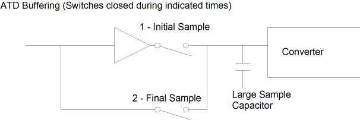
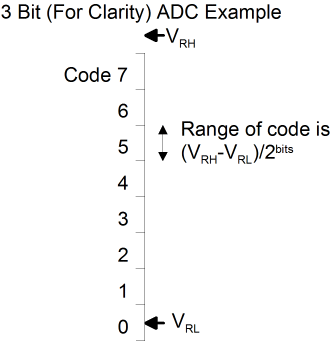
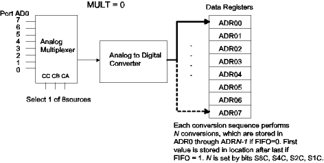
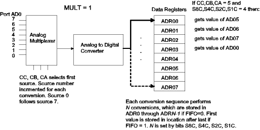

| Previous Section | Next Section | Index | Questions | Search the Text |
The MC9S12DP256 contains two 8 channel, 10 bit Analog to Digital Converters, which Freescale refers to as ATDs. Each input channel may also be used as a general purpose digital input pin. The converter and its interface is described in the ATD_10B8C Block Users Guide. Electrical characteristics are defined in the Users Guide in Appendix A.2. This text section gives a brief overview of the ADC operation.
The Analog to Digital converter is switched capacitor and resistor, successive approximation design. Such a design is compact and easy to manufacture. Because it relies on stored charge, the ATD clock must run in a limited frequency range - 500 kHz to 2 MHz. A clock divider is used to get the ADC clock frequency in range for any system clock frequency. Successive approximation means that one bit of the resulting value is generated per clock -- a binary search is performed comparing the input voltage with that of a reference which consists of a resistive voltage divider allowing selections of N/256*Vref followed by three more stages of capacitive dividers. The ADC runs fairly slowly, with a minimum time of 7 microseconds to perform a conversion.
An analog multiplexer selects one of eight input pins or several internal test sources to measure for each conversion. An initial sample time of two ATD clocks captures the approximate input voltage. A buffer amplifier mirrors the voltage to a large sample capacitor at the same time. During a final sample time, the large sample capacitor is connected to the input to reach its final value. Since the voltage across the capacitor will be close to that of the input, loading is greatly reduced over not having the first sampling. The period of the sampling time is programmable to 2, 4, 8, or 16 clock periods. Accuracy of the ATD would potentially increase with longer sampling times, especially when the source impedence is high. Leakage current in the input and the capacitive loading limit the maximum input impedence to obtain accurate results. Analysis of these factors, as well as the nonlinearity of the converter, is beyond the scope of this text.

The conversion itself is performed using a successive approximation technique that does a binary search for the correct value. Each bit of conversion takes a single ADC clock cycle. The total conversion time is 10 ADC clocks, which when added to the sample times gives a total measuring time of 14 clocks, or 7 microseconds at the maximum ATD clock speed of 2 MHz. The ADC can be run in 8 bit conversion mode which reduces the test time by 1 microsecond (2 ADC clocks).
The conversion requires two reference voltages, VRH and VRL. Voltages to be measured must be between these two reference voltages. The range of the converter is from VRL to VRH or VRH-VRL volts. The resolution of the converter is the voltage change that will cause the digital value (or code) to change, which is range/(2^N), or (VRH-VRL)/1024 volts. It can be seen that to get the best resolution, the range must be as small as possible, however accuracy is only guaranteed when VRH-VRL = 5 volts +/- 10%. This means that the resolution will be roughly 5 mV.

Each code represents a range of voltages. The converter n the 68HCS12 is unusual in that the range for code 0 is centered around VRL while the VRH is above the range for the maximum code (an input of VRH will still result in the maximum code). The average voltage represented by a particular code is C*(VRH-VRL)/2bits + VRL. The code represented by a particular voltage V is round((V-VRL)*2bits/(VRH-VRL)).
When using the ATD, it is important to have a well regulated, low noise power source. To assist in achieving this goal, the ATD portion of the microcontroller has separate power and ground pins (VDDA and VSSA). VRH and VRL must also be connected. For most use, VRH can be connected to VDDA and VRL to VSSA.
There are two converters. The first converter has control and status registers named ATD0xxxx starting at location $0080. Data registers are named PORTAD0 or PORTAD (when used as digital input ports) and ADR0x for the 16-bit conversion result registers. The second converter has control and status registers named ATD1xxxx, port data register PORTAD1, and conversion result registers ADR1x. The input pads are labeled PAD00 to PAD07 for the first converter and PAD08 through PAD15 for the second converter. Notice that the naming of the pins is inconsistent with the naming of the result registers. Some documentation lists the second converter as PAD10 through PAD17, so watch for inconsistencies here as well!
For either converter, the converter is first initialized using control registers 2, 3, and 4. The initialization is completed by storing into control register 5, which has a side effect of starting the conversion sequence. The conversion sequence consists of 1 or more inputs being sampled, converted to decimal, and then stored in a result register.
The following control and status registers are used to utilize ATD 0: ATD0CTL2, ATD0CTL3, ATD0CTL4, ATD0CTL5, ATD0STAT0, and ATD0STAT1. In the following table, the bits in red are used for initialization, those in green are for interrupt configuration, while those in black are for channel selection and making measurements.
| Register | Bit 7 | Bit 6 | Bit 5 | Bit 4 | Bit 3 | Bit 2 | Bit 1 | Bit 0 |
|---|---|---|---|---|---|---|---|---|
| ATD0CTL2 | ADPU | AFFC | AWAI | ETRIGLE | ETRIGP | ETRIGE | ASCIE | ASCIF |
| ATD0CTL3 | 0 | S8C | S4C | S2C | S1C | FIFO | FRZ1 | FRZ0 |
| ATD0CTL4 | SRES8 | SMP1 | SMP0 | PRS4 | PRS3 | PRS2 | PRS1 | PRS0 |
| ATD0CTL5 | DJM | DSGN | SCAN | MULT | 0 | CC | CB | CA |
| ATD0STAT0 | SCF | 0 | ETORF | FIFOR | 0 | CC2 | CC1 | CC0 |
| ATD0STAT1 | CCF7 | CCF6 | CCF5 | CCF4 | CCF3 | CCF2 | CCF1 | CCF0 |
The ADPU bit enables the ATD module. Because the ATD consumes power, by default it is disabled. It takes 10 microseconds for the ATD to become operating after setting the ADPU. AWAI=1 turns off the ATD while the processor is in wait mode (wai instruction executing) to save power. Since measurements may be made during wait mode, this bit is 0 by default.
The ETRIGLE, ETRIGP, and ETRIGE bits are used to configure triggered acquisition. Normally acquisition is under program control, however triggering allows capture and conversions to be performed based on an external trigger signal.
The bits in ATD0CTL3 and ATD0CTL4 must be set for proper operation. S8C through S1C control the number of conversion performed with a single command. Values of 1 through 8 can be selected, with settings of 0 and 8 or above meaning 8 conversions. Normally the conversion results will be placed in consecutive result registers starting with ADR00 with each conversion command; however if the FIFO bit is set, then results are stored in consecutive result registers even between conversion commands and wrap around from ADR07 to ADR00 with each eighth conversion.
The FRZ1 and FRZ0 bits allow pausing the conversion when stopped on a breakpoint using the BDM debugger.
Set the SRES8 bit to 1 to perform 8 bit conversions rather than 10 bit conversions. In general this should only be done to save conversion time.
SMP1 and SMP0 control the final sample time. As previously mentioned, there is no reason to set at other than the minimum 2 ATD clock periods, for a 14 clock period conversion time. This means that SMP1=SMP0=0, the default.
The PRS4 through PRS0 bits control the ATD clock prescaler. This divides the P clock by one of even divisors 2 through 64 to generate the ATD clock, so the divisor is (PRS+1)*2. Since the ATD clock must be in the range 500 kHz to 2 MHz, valid divisor values depend on the processor clock. In the typical case of 24 MHz, the smallest divisor would be 12, so PRS would be 5. The largest divisor would be 48, giving a PRS value of 23. Since we typically would want the fastest operation, the prescaler value should be 5, binary 00101, which is the default value.
Register ATD0CTL5 is used for channel selection. When the MULT and SCAN bits are both 0, and FIFO is 0 as well, the ATD performs conversions by sampling one of the inputs N times and storing the converted voltage in registers ADR00 through ADR0N-1 where N is the number of conversions. The CC, CB, and CA bits determine which input will be used for the measurements. The data registers are 16 bits long. If the DJM bit is 1, the values are right justified (i.e. will be integers between 0 and 1023). If the DJM bit is a 0, the values are left justified and represent a binary fraction. We will discuss binary fractions in the chapter Scaled Arithmetic. By using left justification, the number of converter bits (8 or 10 in this case) will not affect the design of the code used to process the results since extra bits increase themeasurement precision and do not change the range of values. In addition, if left justification is used, the DSGN bit can be set and the converted values will be signed rather than unsigned.

Storing into ATD0CTL5 starts the conversion sequence. As each conversion completes and is stored into a result register, the corresponding CCF bit in ATD0STAT1 is set. When all conversions complete, the SCF bit in ATD0STAT0 is set. The CC bits in ADT0STAT0 indicate the data register where the next conversion result will be stored.
The AFFC bit in ATD0CTL2 controls "Fast Flag Clear All" mode of the ATD. When 0, reading the ATD0STAT1 register and then reading the data register will clear the corresponding CCF bit, and storing into ATD0CTL5 will clear the SCF bit. When AFFC=1, reading the data register will clear the corresponding CCF bit and the SCF bit. It turns out that the "Fast Flag Clear All" will not necessarily save any execution time or code, unlike the similar feature in the Timing Module. However it is useful when using interrupts, as described later.
In the following example, the ATD is initialized, then a sequence of four conversions is performed on pin PAD03. The results are read and averaged. This program is also here, and can be run using the simulator here.
#include registers.inc
org DATASTART ; Data memory (Internal RAM)
reading ds 2 ; Voltage reading goes here
org PRSTART ; Program Memory
entry: ; Initialization code
movb #$80 ATD0CTL2 ; Power up the ATD
ldaa #240/3 ; 10 microsecond delay
wait: dbne a wait
movb #$20 ATD0CTL3 ; Sets 4 conversions
movb #5 ATD0CTL4 ; Sets divider to x12, 10 bit conversion
; minimum sample time
; Start the ATD sequence
movb #$83 ATD0CTL5 ; Start operation, sampling PAD03
; right justified values
wait2: brclr ATD0STAT0 #$80 wait2 ; Wait for SCF=1
; Read and average the four measurements
ldd ADR00H ; get first value ("H" is high byte address)
addd ADR01H ; add second
addd ADR02H ; add third
addd ADR03H ; add fourth
lsrd ; divide by 4
lsrd
adcb #0 ; And round result
adca #0
std reading
swi ; Return to Monitor
end
If the MULT bit of ATD0CTL5 is set, then instead of performing N conversions of a single analog input, a single conversion is performed for N analog inputs. Bits CC, CB, and CA are used to specify the first input to be measured, and the input number is incremented (modulo 8) for each successive conversion.

It is possible to operate the ATD with an interrupt service routine. Interrupts are enabled by setting the ASCIE bit in ATD0CTL2 to 1. The interrupt flag, ASCIF, is set when the ASCIE bit is 1 and a conversion sequence completes (the ASCIF flag is the same as the CCF flag when interrupts are enabled). This causes an interrupt service request. The interrupt service routine reads the values in the data registers. When the interrupt routine starts the next conversion sequence by writing to ATD0CTL5, the ASCIF bit will clear, allowing the interrupt routine to return to the previously executing routine. To stop performing readings, the interrupt routine must clear the ASCIE bit. This will mask ASCIF from causing the interrupt service routine to be re-entered. If at some future time it is desired to perform readings again, the ATD0CTL5 register is loaded with a new command (which will clear ASCIF) then the ASCIE bit is set to allow interrupts to occur again. By modifying the preceding program (changes shown in red), it can function as an interrupt driven measurement routine:
#include registers.inc
org DATASTART ; Data memory (Internal RAM)
reading ds 2 ; Voltage reading goes here
org PRSTART ; Program Memory
entry: ; Initialization code
lds #DATAEND ; Initialize stack pointer
movw #atdint UserAtoD0 ; Set interrupt vector, D-Bug12
movb #$82 ATD0CTL2 ; Power up the ATD, enable interrupt
ldaa #240/3 ; 10 microsecond delay
wait: dbne a wait
movb #$20 ATD0CTL3 ; Sets 4 conversions
movb #5 ATD0CTL4 ; Sets divider to x12, 10 bit conversion
; minimum sample time
; Start the ATD sequence
cli
movb #$83 ATD0CTL5 ; Start operation, sampling PAD03
; right justified values
wait2: wai ; Idle process
bra wait2
; Read and average the four measurements
atdint: ldd ADR00H ; get first value
addd ADR01H ; add second
addd ADR02H ; add third
addd ADR03H ; add fourth
lsrd ; divide by 4
lsrd
adcb #0 ; And round result
adca #0
std reading
; Do one of the following two instructions:
movb #$83 ATD0CTL5 ; Start next operation OR
; bclr ATD0CTL2 #$02 ; ASCIE=0 to disable ADC interrupt
rti ; Return from interrupt
end
Interrupts can also be used in Scan Mode --
An alternative to using an interrupt service routine is to use Scan Mode. In scan mode (SCAN=1 in ATD0CTL5) the ATD runs continuously, immediately starting a new sequence when the current sequence completes. The data registers can be read at any time and will always have the most recent measurements. When using Scan mode, the SCF flag is set after the each conversion sequence completes. The CCF flag bits are set when a data register has a new value and cleared when the data register is read (if AFFC=1, or after ATD0STAT1 is read and a data register is read if AFFC=0). If a new data value is loaded into a result register before its CCF flag bit is cleared, the FIFOR status bit is set indicating "FIFO Overflow".
When using interrupts in combination with Scan Mode, typically the AFFC bit is first set. When the data registers are read in the interrupt routine, the ASCIF bit will be cleared automatically. The interrupt will occur again when the next sequence completes.
The following program is a variation of the first program in this section, with changed lines indicated in red. It will continuously measure PAD3, averaging the most recent four measurements. In order to perform "useful work" in this program, code can be added where indicated, or the application can be interrupt driven. In the interrupt driven case, we could average the readings in the interrupt service routine.
#include registers.inc
org DATASTART ; Data memory (Internal RAM)
reading ds 2 ; Voltage reading goes here
org PRSTART ; Program Memory
entry: ; Initialization code
movb #$80 ATD0CTL2 ; Power up the ATD
ldaa #240/3 ; 10 microsecond delay
wait: dbne a wait
movb #$20 ATD0CTL3 ; Sets 4 conversions
movb #5 ATD0CTL4 ; Sets divider to x12, 10 bit conversion
; minimum sample time
; Start the ATD sequence
movb #$A3 ATD0CTL5 ; PAD03, Scan Mode, right justified
wait2: brclr ATD0STAT0 #$80 wait2 ; Wait for SCF=1
loop: ; Read and average the four measurements
ldd ADR00H ; get first value
addd ADR01H ; add second
addd ADR02H ; add third
addd ADR03H ; add fourth
lsrd ; divide by 4
lsrd
adcb #0 ; And round result
adca #0
std reading
; Do other things here
bra loop ; Read again
end
Another approach to using Scan Mode is to just read the data registers when the values are needed.
Sometime it is desired to trigger an conversion sequence based on an external event rather than under program control or continuous operation. Pin 7 can be used as an external trigger input rather than as an ADC input by setting the ETRIGE bit to 1. When ETRIGE=1, a conversion sequence will not start by writing to ATD0CTL5. A conversion sequence will start on the rising edge of Pin 7 if ETRIGP is 1 and will start on the falling edge of Pin 7 if ETRIGP is 0. The SCAN bit is ignored and only a single sequence will be performed. However if ETRIGLE is 1 then the trigger input will be level sensitive and conversion sequences will be repetitively executed as long as Pin 7 is asserted high (ETRIGP=1) or low (ETRIGP=0). The status bit ETORF is set if a new sequence is triggered before the result are read.
Input pins which are not being used for ADC inputs are available for general purpose digital inputs. Since voltage inputs around the digital switching point would cause excessive current to flow in the digital input logic, the pins must be enabled for digital use (which enables the digital input logic). The register ATD0DIEN has digital enable bits for the first ADC, while ATD1DIEN has digital enable bits for the second ADC. Setting a value of one to a bit enables digital input in the corresponding bit position of the port. The digital values can be read from the PORTAD0 (1st ADC) or PORTAD1 (2nd ADC) data registers.
Continue with External Memory/Peripheral Interfacing
Return to the Index